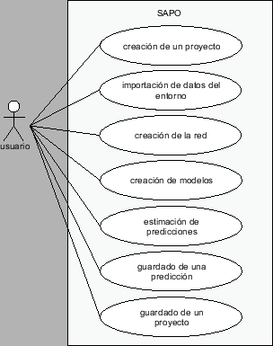

Siguiente: Manejo de errores
Subir: Arquitectura de software
Anterior: El paquete archivos
Índice General
En la figura 8.13 se puede ver los casos de uso más relevantes
de SAPO. En los diagramas siguientes se muestra a grandes
rasgos la interacción entre los principales paquetes que intervienen
en dichos casos de uso. El caso de estimación de una predicción, por
ser de especial importancia es representado más en detalle, mediante
un diagrama parcial de colaboración de clases (figura
8.18).
Figura 8.13:
Diagrama parcial de casos de uso
|

|
Figura 8.14:
Creación de un proyecto
|
|
Figura 8.15:
Importación de datos de entorno
|
|
Figura 8.16:
Creación de un modelo de propagación
|
|
Figura 8.17:
Creación de la red
|
|
Figura 8.18:
Diagrama de colaboración de una
predicción
|
|
Figura 8.19:
Guardado de un proyecto
|
|
Siguiente: Manejo de errores
Subir: Arquitectura de software
Anterior: El paquete archivos
Índice General
SAPO
![\includegraphics[width=9cm]{Software/diagramaCU1.eps}](img263.png)
![\includegraphics[width=12.5cm]{Software/diagramaCU4.eps}](img266.png)